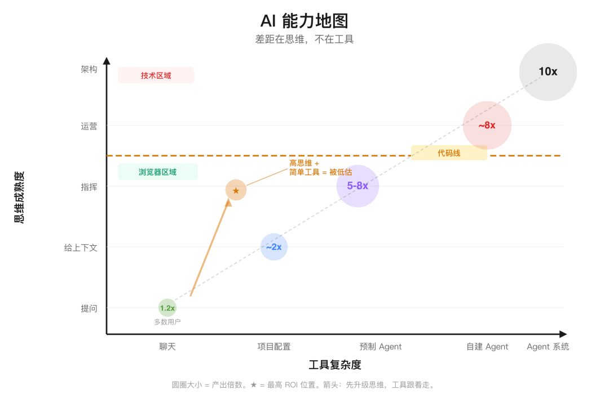
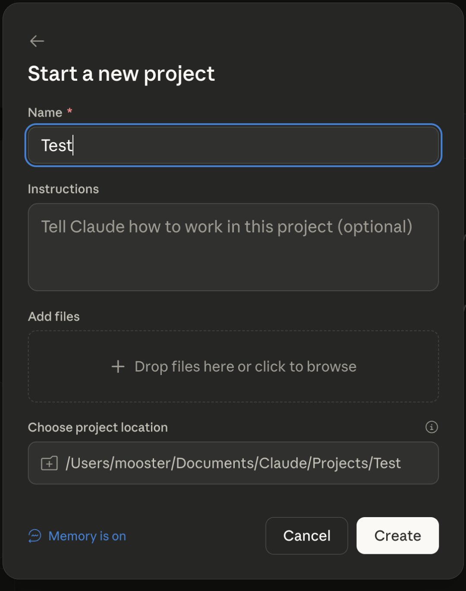
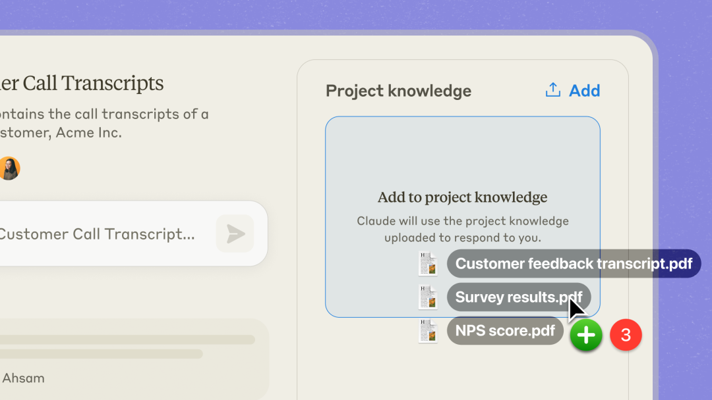
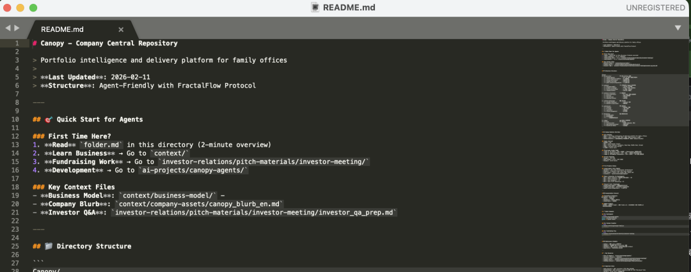
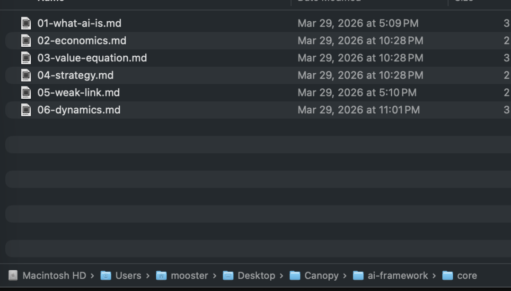
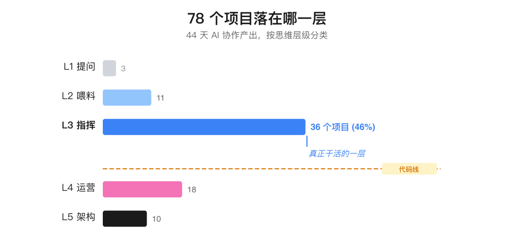
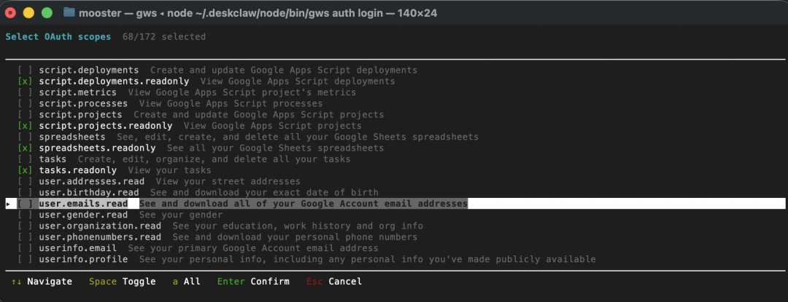
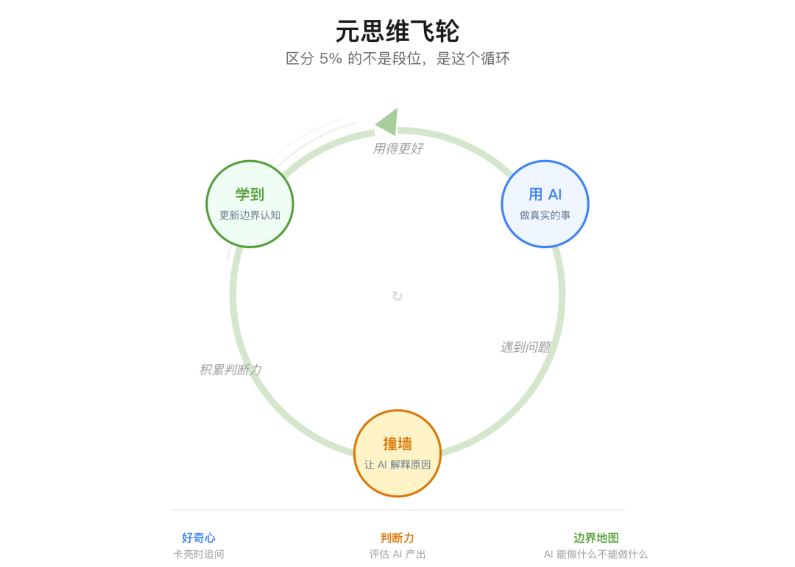

自从我开始写 AI 以来，会有很多朋友问我 AI 的问题。
我一直没法给一套标准答案。因为每个人的情况都差太远了——用的工具不一样，技术背景不一样，干的活儿也不一样。没有哪个教程能解决所有人的问题。
市面上大部分 AI 指南都在教工具。但它们解释不了一个核心问题：为什么同样是花 20 美元订阅，两个人得到的结果天差地别？
GitHub 测过，用 Copilot 辅助编程，开发者的效率提升了 1.55 倍。[^b1] Anthropic 的内测发现，工程师如果自己设计工作流（Workflow），效率能提升 6 倍。[^b2] 你怎么用，比你用什么，重要得多。
差距不在工具，在三个东西的同步进化：你的思维模式，你的技能，最后才是你用的工具。顺序不能错。KPMG 分析了 140 万次人机交互，发现只有 5% 的用户称得上「成熟」。[^1]
我结合自己的实践（44 天，1683 次会话，100 亿 token，78 个项目）和这些研究，总结了 AI 用户的五个 Level。前三个Level，一行代码都不用写。
这篇文章最重要的不是这五个Level本身，而是底下那个推着你往上走的飞轮。

AI 能力地图：差距在思维，不在工具
Level 1：张口就问
绝大多数用户都在这一层。打开聊天框，问个问题，拿到什么算什么。
常见的三个抱怨：
「回答不够深。」 AI 的内置记忆只能零零散散记住一点东西——你的名字、你的职业，或者你上次随口提到的某个概念。它压根不知道你的投资框架、你的写作标准、你真正的观点。一个「还行」的答案和一个「很有用」的答案之间，几乎全是上下文（Context）的鸿沟。
「数据是错的。」 大语言模型（LLM）是在根据它见过的海量文本，重新「创作」文本，而不是在做计算或查询。你让它算个 XIRR，它会给你一个看起来很像回事儿的数字，但大概率是错的。怎么办？让模型跟你熟悉的工具配合。用 Perplexity 查资料，用 Excel 做计算，读取你自己的文件来获取专业数据。
「有安全风险。」 按敏感度分四层处理：公开信息随便用。内部非敏感信息用付费版 Claude/ChatGPT（合同写明不训练你的数据）。客户数据只走 API 或本地部署。高度机密别碰。
Andrej Karpathy 有个比喻很到位：AI 是「一个顶尖的博士生和一个 10 岁小孩的结合体」。[^3] 在第一层，你遇到的基本都是那个 10 岁小孩。不是模型不行，是你根本没给博士生创造出场条件。
Further reading: - Ethan Mollick, How to Use AI to Do Practical Stuff
Level 2：喂料
大部分人卡在Level 1，是因为每次对话都从零开始。Level 2的核心：别等 AI 变聪明，你让它变聪明。花 15 分钟做一次设置，之后每次对话都受益。
写好操作手册。 ChatGPT 里叫 Custom Instructions，Claude 里叫 Project Instructions，Perplexity 里叫 Space Instructions。名字不同，东西一样。程序员们管这个叫 CLAUDE.md 文件，其实就是个写在设置页里的备忘录。
- 角色：
多家族办公室的投资分析师 - 风格：数据优先，先给结论，不说废话
- 关注：亚太股票，GARP 风格
- 输出：英文，标注来源，结尾加 "Key risk to our thesis: ..."
- 不要：买卖推荐。没要求就不用 bullet point。
写完之后，每次对话都会自动加载。

Claude 项目设置页：写好指令，每次对话自动加载
上传文件。 把你最近的 Memo、一份季报、你的 SOP 模板传上去。AI 会自动校准，学习你的行文结构、专业术语和细节程度。

上传文件：AI 自动校准你的结构和术语
喂给它你的判断。 「记住：我认为小米的电动车业务毛利会承压——管理层在三季报里暗示过。」你的观点，是搜索引擎给不了的独家信息。Simon Willison 把这叫做「囤积你的独门手艺」——正是你的经验，让同一个 AI 模型对你比对别人更有用。[^4]
把不同领域分开。 投研一个项目，客户沟通一个项目，合规审查又是一个项目。同一个问题，在不同项目里问，答案会完全不同。

一个真实的 CLAUDE.md：Agent 快速上手指南、核心文件、目录结构
我写 newsletter 就有一个专门的 CLAUDE.md，里面定义了我的写作身份（CEO 从业者，不是分析师）、内容边界（公司哪些能说，哪些不能）、风格（少废话，先说结论），甚至还有我的中文写作流程（用 Kimi API，不用 Claude，因为 Kimi 中文更地道）。九篇文章写下来，每次对话都会自动加载这些背景。我第一篇和后面几篇的质量差别，不是因为模型升级了，而是因为上下文更好了。
开发了 Claude Code 的 Boris Cherny 说，这是「一次 30 分钟的投资，回报能持续好几个月」。[^5]
如果你看完这篇文章只打算做一件事，就把下面这段话复制到你 AI 工具的设置里，然后填空：
- 我是：[你的角色]，在 [你的机构类型] 工作
- 主要负责：[2-3 件你花时间最多的事]
- 风格偏好：[简洁/详细，正式/随意，数据优先/叙事优先]
- 始终要求：[一件你希望 AI 每次都做的事]
- 绝对不要：[一件你希望 AI 永远不做的事]
Further reading: - Anthropic, Prompt Engineering Tutorial - 免费的 9 章课程 - JD Hodges, Claude Project Instructions: Templates
Level 3：指挥
又上一个台阶：从跟 AI 「聊天」，到给 AI 「派活」。
你就像个导演。你定下目标，选好工具，明确标准，最后审片。AI 是执行团队。
这一层有两个档位。第一档，是把重复劳动流程化。第二档，是把以前一个人根本干不了的活儿，外包给 AI。
第一档：流程化
我写 newsletter 的工作流：英文初稿用 Claude 写，加载一个定义了我写作风格的 Skill，里面有我的语气、文章结构、还有一堆要避免的「反面模式」。中文版用 Kimi API，因为它的中文比任何英文母语的模型都自然。写完后，让一个「多角色 AI 评审团」来审稿——里面有挑剔的 CIO，有专门检查废话的记者，还有一个没耐心、第一段不吸引人就关网页的家族办公室负责人。
每篇文章都走一遍这个流水线。产出再也不是开盲盒了。

结构化知识文件：AI 像新员工读公司 wiki 一样读这些
这里的技能点很具体：
写可复用的模版（Template）。 比如公司财报前瞻：我的论点 → 5 个关键指标 → 管理层口风变化 → 多空双方观点 → 电话会要问的问题。再比如客户邮件：个性化开场 → 业绩 vs 基准 → 主要变化 → 展望 → 下一步。写一次，存进项目，每次都用。
设定验证规则。 不是所有东西都要核实。比如数字和财务数据，必须核实；引用和链接，抽查就行；文章结构和语气，基本可以信任。有了这张表，你就不会在每个输出上都纠结。
使用「规划模式」（Planning Mode）。 让 AI 先出计划，再执行。「先列出大纲，然后一步一步做。」能大幅降低复杂任务的出错率。
为任务匹配工具。 不同的活儿给不同的工具。200 页的招股书扔给 Claude（100 万 token 上下文）。查公司背景用 Perplexity（实时，有引用）。处理中文用 Kimi。审阅 DCF 模型用上传了你文件的 Claude 项目。麦肯锡发现，能组合使用 7 种以上 AI 工具的人，比只用一两种的人，节省 5 倍的时间。[^6]
第二档：开拓新领域
第一档是把你已经知道怎么做的事情自动化。第二档不一样：你只定义目标，不给具体步骤，去干一些以前一个人干不了的活儿。
我们做 Q1 董事会材料时，我把三个数据源——ARR 追踪表、P&L、现金收款记录——扔给 Claude，让它找出三者对不上的地方。它标出的一些出入，我自己看肯定会漏掉。
另一个项目，我派了 18 个 agent，通宵把 2630 条产品问题反馈，按根本原因分类，并根据影响力对解决方案进行排序。我睡前写好 brief，第二天早上，一份结构化的分析报告就放在那儿了。
这个档位用到的工具都是自主的。Perplexity Deep Research 几分钟就能生成一份综合 30 多个来源、带引用的报告。[^4] Manus 能根据一个目标，自己规划步骤并执行。Computer Use 能直接操作你的电脑桌面。[^7]
所以在这个档位，你的工作从写模板，变成了写 brief。你下令「研究一下这家公司」，只会得到一堆垃圾。但如果你说「写一份 2 页的备忘录，带引用，研究这家公司 2024 年以来的管理层变动、在东南亚的竞争地位，以及近期的监管风险」，你就能得到一份可以用来决策的东西。
这才是真正干活的一层
我过去 44 天交付的 78 个项目，横跨战略、内容、产品分析、业务发展和系统架构，其中 46% 都来自这一层。不是 agent，而是设计模板和委派任务。
这些活儿如果按传统方式招人干，大概需要 3-5 个人，花 3-4 个月，人力成本大概 18-28 万美元。AI 成本产出同样的东西：每月约 300 美元。产出大概是 5-8 倍的放大——大部分提升来自Level 3的第二档。

78 个项目落在哪一层
Gumroad 的创始人 Sahil Lavingia，一个人干到了 $10M ARR，从想法到上线只要 10 分钟。[^8] Shopify 的 Tobi Lutke 说：「招人之前，先证明 AI 干不了这活儿。」[^9] Pieter Levels，年入 $3.1M，零员工，利润率 87%。[^10]
到这里，仍然一行代码都不用写。
但现实是，只有大约 20% 的新 AI 工作流，能被人坚持用超过一周。[^11] 我的建议是，从最简单的开始，试一周，好用就留着，不好用就扔了。
Further reading: - KPMG & HBR, What the Best AI Users Do Differently - Sahil Lavingia, 40x Productivity Playbook on Lenny's Podcast
以上所有，都在浏览器或 APP 里完成。以下内容，需要技术能力——或者一个懂技术的朋友。 能做到 Level 1-3，你已经超过 95% 的人了。
Level 4：让 AI Agent 跑起来
前面三层，是你打开一个工具。第四层，是 agent 7x24 小时在运行——在你的 Slack 里，WhatsApp 里，或者命令行里。你不用去找它，它就在那儿。
这是整个升级链条里，掉队率最高的一环。
我帮好几个朋友搭过 agent。每次安装都成功了，但最后都没用起来。根本原因一样：在动手安装前，谁也没想好一个每天都要用的场景。
一个朋友选了 Kimi 做模型，但没考虑他本地访问 Kimi 的延迟。太慢了，不好用，一周后放弃。另一个朋友从没用过命令行终端——对我来说「敲个命令回车」的事，对他来说像外星科技。一个 5 分钟的配置，我们花了 45 分钟。

跨过代码线的样子：为 Google Workspace agent 配置 OAuth 权限
我的建议：在你明确说出一个浏览器工具无法解决的、高频重复的任务之前，不用急着跨过「代码线」（The Code Line）。
一旦你决定要跨，前面 Level 2-3 的思维方式可以直接平移。浏览器里的 Project Instructions，变成了代码编辑器里的 CLAUDE.md 文件。Skill 模板，变成了 agent 的 Skills。你喂给它的判断，变成了结构化的记忆文件。同样的框架，不同的界面。我 CLAUDE.md 里的每一条规则，都是因为 AI 之前犯过错，我写下来纠正它——这跟在浏览器里调校 Project Instructions 的过程一模一样。
大部分人跨越代码这条线，都需要帮助。个人用，找个懂技术的朋友。公司用，找内部的工程团队或者外部服务商。你的领域判断，加上他们的技术实现能力——这个组合，比任何一方单打独斗都强。
还有一个现实：现在的 AI 基础设施并不完善。模型会幻觉，API 会变，工具链之间的衔接经常断。你看到那些用得很好的大佬，很多时候是自己 DIY 了一堆组件和补丁才跑通的。到了这个Level，你可能已经被推到了当前 AI 技术的边界——有些问题没有现成答案，需要你去读论文、读研究、自己摸索。
Claude Code 的网页版（claude.ai/code）和 Karpathy 提出的 "vibe coding"[^3] 降低了小项目的门槛，但任何生产级别的应用，都需要专业支持。
Further reading: - Anthropic, Claude Code Quickstart - Builder.io, Claude Code for Beginners
Level 5：架构
到这一层，你不再是操作一个 agent，而是在设计一个系统——由多个 agent 组成，每个都有自己的角色、模型、权限和规则。
举一个我们正在测试的例子。在 Canopy，我们的销售团队把客户通话记录发到 Slack 频道，一个售前 agent 自动接收、解析通话内容，从四个维度（数据复杂度、系统集成、报表需求、组织架构）打分，生成结构化的评估报告写入 Notion，并 @相关同事跟进。从通话笔记到评估报告，全程自动，20 个测试用例全部通过。
这只是其中一个 agent。团队工作区还有一个 agent 负责回答产品问题，知识库来自我们服务 60 多家机构客户的经验沉淀。每个 agent 都有自己的模型选择、数据权限和操作规则。很多定时任务（Cron Job）在夜间自动运行。我们还有一个共享的记忆层（Memory Layer），一个 agent 的发现会自动进入下一个 agent 的上下文。
不是每个 agent 都需要最强的模型。监控系统健康的 agent，用最便宜的模型就够了。做战略研究的 agent，得上最好的模型。
当 API 变了，或者某个定时任务悄无声息地挂了，总得有人在凌晨两点起来 debug。
智能是 AI 的。韧性是你的。
Karpathy 说：「写代码（code）这个词都不对了，现在更像是『意念实现』（manifest）。」[^3] Cherny 说他自 2025 年 11 月以来就没手写过代码，日常是 5 个命令行终端加 10 个浏览器窗口并行工作。[^5] Willison 说：「我写的代码里，95% 都不是我敲的。」[^4]
就像生产系统需要 DevOps 一样，你需要一个 AI 基础设施的职能，来保证 agent 正常运行，模型及时更新，记忆层保持一致。这事儿会出问题，是运维，不是魔法。
但知道了这一层的存在，你就能理解为什么你看别人的产出，感觉中间有巨大的鸿沟。他们不是比你快，是他们开了 5 个 agent 在跑，而你还在手敲一个 prompt。
Further reading: - Karpathy, LLM Knowledge Bases - Boris Cherny, howborisusesclaudecode.com - 72 条技巧 - Simon Willison, Agentic Engineering Patterns
那个飞轮

元思维飞轮
这五个层级不是梯子，爬上去就完事了。它更像一个循环。
那 5% 的人到底强在哪？不是他们在哪一层，而是他们建立了一种我称之为「元思维」（meta thinking）的能力——一种思考如何与 AI 一起思考的能力。
这是大部分教程完全略过的部分。它们教你工具，教你 prompt。但元思维，才是让同样的工具在不同人手里产生 10 倍差异的根本原因。
它包含三个部分：
1. 卡壳时的好奇心。 当 AI 给你一堆垃圾时，你的第一反应是什么？最重要的本能是：「刚才发生了什么？」然后，问 AI 自己，让它解释。AI 教你怎么用 AI——一个自我强化的循环。你不需要一开始就什么都懂，你只需要有刨根问底的意愿。
2. 评估 AI 产出的判断力。 你不需要会写代码。但你得能看出来 AI 什么时候在胡说八道——营收数字跟你记忆里的对不上，一个五步计划里的第三步毫无逻辑。这跟你审阅一个初级分析师工作的能力，是同一种能力。
3. 一张不断更新的 AI 能力边界地图。 你每用 AI 干一件事，你脑子里关于「AI 能做什么，不能做什么」的地图就会更新一次。这张地图是动态的，每几个月模型一升级，它就变了。如果你在这个飞轮上，你会自然而然地跟上节奏。如果不在，每次模型升级对你来说都只是噪音。
这三件事是复利效应。使用 → 遇到问题 → 学习 → 用得更好 → 挑战更难的问题。
这就是为什么你直接抄别人的 CLAUDE.md 没用的原因。一个好的 CLAUDE.md 是成百上千次飞轮迭代的结果。它背后那个「元思维」的过程，你是看不到的。你看完一个高手指南，照着做了，但总觉得「差点意思」，那种感觉是对的——因为你复制了他的工作流，但没有复制他底层的思维模式。
从哪儿开始
回到开头的问题：为什么同样花 20 美元，两个人的产出天差地别？
不是工具的问题。是思维、技能、工具三者有没有同步进化。五个 Level 是路标，飞轮是引擎，元思维是燃料。大部分人卡住，不是因为缺工具，是因为从来没人告诉他们下一步该怎么想。
更深一层讲：AI 让智能变便宜了。但价值 = 智能 × 上下文 × 方向，三者缺一不可。模型每个月都在变强，但上下文是你的——你的行业经验、你的数据、你的判断标准。方向也是你的——做什么、不做什么、为什么做这个不做那个。这两样东西不会因为模型升级而贬值，反而因为智能变便宜而升值。
当智能变便宜了，方向、上下文、判断力、信任变贵了。
Karpathy 说行业对 AI 潜力的挖掘连 10% 都不到。[^3] 这意味着你现在建的每一点 context、每一条验证规则、每一次飞轮的转动，都是在为未来 90% 的能力释放做准备。
入门成本是每月 20 美元。从 Level 2 开始，用你已经在用的工具。写三句话介绍你是谁，传一个你常用的文件。飞轮从第一圈开始转。
陈沐（Mu Chen），Canopy CEO，清华五道口金融学院客座讲师。Canopy 服务全球 60+ 家族办公室与超高净值客户，跟踪超过 1200 亿美元资产。他在小宇宙播客「不止金钱」、微信公众号「沐的沙盒」和英文 newsletter Amongst Families 记录 AI 与财富管理的一线实践。我建了一个小群，聊 AI Agent 实操和 OpenClaw 怎么调，感兴趣的朋友可以私信我。
Sources
[^1]: KPMG & UT Austin, What the Best AI Users Do Differently, March 2026
[^3]: Andrej Karpathy, various X posts and talks, 2025-2026
[^4]: Simon Willison, Lenny's Podcast and Agentic Engineering Patterns, 2026
[^5]: Boris Cherny, STATION F, Fortune, howborisusesclaudecode.com [^6]: McKinsey, Superagency in the Workplace, January 2025
[^7]: OpenAI, GPT-5.4 OSWorld benchmark, 2026
[^8]: Sahil Lavingia, Lenny's Podcast, 2026
[^9]: Tobi Lutke, AI memo, April 2025
[^10]: Pieter Levels, Lex Fridman #440
[^11]: Hilary Gridley, Lenny's How I AI, 2026
[^b1]: GitHub, Research: Quantifying GitHub Copilot's Impact on Developer Productivity, 2023
[^b2]: Anthropic, Estimating AI Productivity Gains from Claude Conversations, 2025